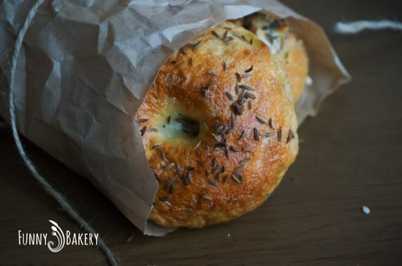

Бейгъли по нашенски

Време за приготвяне - ~3 часа
Порции - 10 броя
Ниво на трудност - Средно
Необходими продукти:
- Суха мая за хляб - 7гр.
- Кафява захар - 1 + 1/2 с.л.
- Сол - 1 ч.л.
- Хладка вода - 300 мл.
- Бяло брашно - 500 гр.
- Белтък за намазване - 1 бр.
- Семена за поръсване
- Сода за хляб - 1 с.л.
- Тенджера с вряла вода
Стъпки за приготвяне:
- Сипваме маята в хладката вода.
- Брашното изсипваме в голяма купа без да го пресяваме, и правим кладенче в средата.
- Сипваме солта по края на брашното.
- Замесваме гладко и еластично тесто.
- Готовото тесто поставяме в намаслена купа, покриваме с фолио и го оставяме да втаса за 1 час на стайна температура.
- След като тестото е втасало го изваждаме на чист плот и го разделяме на 10 равни по размер топки.
- Застиламе две тави с хартия за печене и подреждаме топките в тях на разстояние една от друга.
- Така подредените хлебчета покриваме отново с фолио и оставяме да втасат отново за 30 минути.
- Когато са повторно втасали е време да направим дупка в средата на всяко хлебче.
За целта набрашняваме пръста си и натискаме центъра на всяко едно.
- Време е да включим и да загреем фурната на 180 градуса.
- На котлона кипваме вода в голяма тенджера, в която добавяме содата бикарбонат.
- В така приготвената вода пускаме по 1-2 бейгъла (гевречета), като ги държим във водата по около 30 секунди от всяка страна.
- Вадим ги с решетъчна лъжица изцеждайки излишната вода и ги връщаме в тавата върху хартията за печене.
- Намазваме така готовите гевречета с леко разбития белтък и поръсваме с избраните от нас семена (сусам, смлени орехи или други ядки, ким или маково семе и пр.).
- Печем ги за около 20-25 минути до златисто кафяво.
- Изваждаме готовите бейгъли (или иначе казано хлебни гевречета) върху метална решетка и ги оставяме да се охладят.